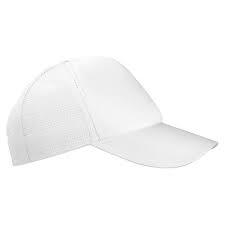
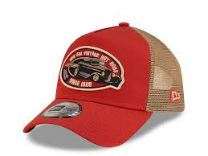
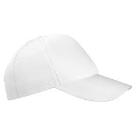
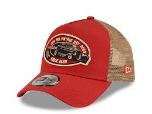

GorrasShop: El Arte de la Gorra.
Estilos únicos, materiales premium, la tradición de Taxco en cada diseño.
Ver Catálogo✨ Nuestra Historia: Desde la Joya Colonial de Taxco
Raíces en el Corazón de Guerrero
GorrasShop no es solo una tienda de gorras; es un homenaje a la autenticidad y el detalle. Fundada en la mágica ciudad colonial de **Taxco de Alarcón**, Guerrero, nuestra inspiración proviene de la rica herencia artesanal de la ciudad, famosa por la plata.
Así como los plateros de Taxco forjan piezas únicas, nosotros seleccionamos gorras que son verdaderas obras de arte textil. **Cada gorra tiene su propia historia y estilo único**, elegida no por la marca, sino por su calidad, diseño y la capacidad de expresar tu personalidad.
"No vendemos gorras, vendemos estilo y un pedazo de autenticidad."
🧢 Catálogo de Estilos Únicos (30 Productos)
Clásicas Atemporales
Negra Premium
Material: 100% Algodón.
Estilo: Curva/Ajustable.
Precio: $499 MXN
Blanca Minimal
Material: 100% Algodón.
Estilo: Curva/Ajustable.
Precio: $420 MXN
Roja Sólida
Material: 100% Algodón.
Estilo: Curva/Ajustable.
Precio: $450 MXN
Verde Militar
Material: 100% Algodón.
Estilo: Curva/Ajustable.
Precio: $520 MXN
Gris Carbón
Material: 100% Algodón.
Estilo: Curva/Ajustable.
Precio: $400 MXN
Café Vintage
Material: 100% Algodón.
Estilo: Curva/Ajustable.
Precio: $580 MXN

Mostaza Verano
Material: 100% Algodón.
Estilo: Curva/Ajustable.
Precio: $410 MXN
Denim Claro
Material: 100% Algodón.
Estilo: Curva/Ajustable.
Precio: $550 MXN
Azul Rey Básico
Material: 100% Algodón.
Estilo: Curva/Ajustable.
Precio: $399 MXN
Bordado Lateral
Material: 100% Algodón.
Estilo: Curva/Ajustable.
Precio: $620 MXN
Ventilación y Estilo Trucker
Azul Marino Mesh
Material: Malla/Algodón.
Estilo: Trucker.
Precio: $350 MXN
Trucker Vintage Roja
Material: Malla/Algodón.
Estilo: Trucker.
Precio: $390 MXN
Trucker Bicolor
Material: Malla/Algodón.
Estilo: Trucker.
Precio: $380 MXN
Trucker Camuflaje
Material: Malla/Poliéster.
Estilo: Trucker.
Precio: $490 MXN
Trucker Naranja
Material: Malla/Poliéster.
Estilo: Trucker.
Precio: $360 MXN
Logo Vintage
Material: Malla/Algodón.
Estilo: Trucker.
Precio: $450 MXN
Trucker Pescador
Material: Malla/Lona.
Estilo: Trucker.
Precio: $420 MXN
Trucker Total Black
Material: Malla/Algodón.
Estilo: Trucker.
Precio: $400 MXN
Trucker Surf
Material: Malla/Poliéster.
Estilo: Trucker.
Precio: $480 MXN
Trucker Doble Tono
Material: Malla/Algodón.
Estilo: Trucker.
Precio: $370 MXN
Diseños Urbanos y Especiales
Snapback Grafiti
Material: Poliéster/Acrílico.
Estilo: Snapback/Plana.
Precio: $599 MXN
5-Panel Texturizada
Material: Algodón/Piel sintética.
Estilo: 5-Panel.
Precio: $650 MXN
Snapback Neón
Material: Poliéster.
Estilo: Snapback/Plana.
Precio: $550 MXN
5-Panel Rayas
Material: 100% Algodón.
Estilo: 5-Panel.
Precio: $480 MXN
Snapback Metálica
Material: Poliéster.
Estilo: Snapback/Plana.
Precio: $620 MXN
5-Panel Full Print
Material: 100% Algodón.
Estilo: 5-Panel.
Precio: $510 MXN
Snapback Tejido
Material: Poliéster.
Estilo: Snapback/Plana.
Precio: $600 MXN
5-Panel Bordado
Material: 100% Algodón.
Estilo: 5-Panel.
Precio: $540 MXN
Snapback Deportiva
Material: Poliéster.
Estilo: Snapback/Plana.
Precio: $500 MXN
5-Panel Lona
Material: Lona de Algodón.
Estilo: 5-Panel.
Precio: $460 MXN
Guía de Tallas 📏
| Talla | Medida en cm | Equivalente |
|---|---|---|
| 6 7/8 | 54.9 cm | Extra Pequeña |
| 7 | 55.8 cm | Pequeña |
| 7 1/8 | 56.8 cm | Pequeña/Mediana |
| 7 1/4 | 57.7 cm | Mediana |
| 7 3/8 | 58.7 cm | Mediana/Grande |
| 7 1/2 | 59.6 cm | Grande |
| 7 5/8 | 60.6 cm | Extra Grande |
| 7 3/4 | 61.5 cm | XXL |
| 7 7/8 | 62.5 cm | XXL |
| 8 | 63.5 cm | XXXL |
Para medir tu talla, usa una cinta métrica alrededor de la cabeza justo por encima de las orejas.
🛍️ Nuestro Proceso de Compra y Pago
1. Elige tu Gorra
Navega por nuestro catálogo, usa los filtros de Material y Estilo. Una vez que encuentres la gorra perfecta, haz clic en **"Ver Detalle"**.
2. Pide por WhatsApp
En la ventana de detalle, haz clic en el botón **"Pedir por WhatsApp"**. Se generará un mensaje automático con el nombre, talla, cantidad y precio total de la gorra.
3. Confirma tu Orden (Solo Local)
Recibirás confirmación de disponibilidad. Nuestro modelo de negocio actual se centra en **entregas personales en Taxco de Alarcón** para garantizar la calidad y satisfacción inmediata.
4. Pago Presencial y Entrega
Una vez acordado el punto de encuentro, el **pago se realiza en efectivo o transferencia al momento de la entrega** de tu gorra. ¡Rápido, seguro y personal!
⭐️ Lo que Dicen Nuestros Clientes
★★★★★
"¡Totalmente confiables! La calidad de la gorra supera mis expectativas y la atención por WhatsApp es excelente. Me la entregaron en el punto acordado en Taxco y el pago en persona fue muy seguro."
- Karla M. (Guerrero)
★★★★★
"La 'Gorra Deportiva Mesh' es perfecta para correr. El proceso de pedido por mensaje es súper ágil. Es bueno tener una tienda de gorras con tanta variedad y que sea 100% confiable y local."
- Luis G. (Taxco)
★★★★★
"Encontré un estilo de 5-Panel que buscaba por meses. La honestidad al manejar el pago contra entrega da mucha tranquilidad. Una tienda profesional con gorras de estilo único."
- Sofía P. (Taxco)
Contáctanos y Haz tu Pedido 💬
Estamos listos para atenderte personalmente.
¡Chatea con Nosotros por WhatsApp!📲 Teléfono de contacto: (733) 100-6981